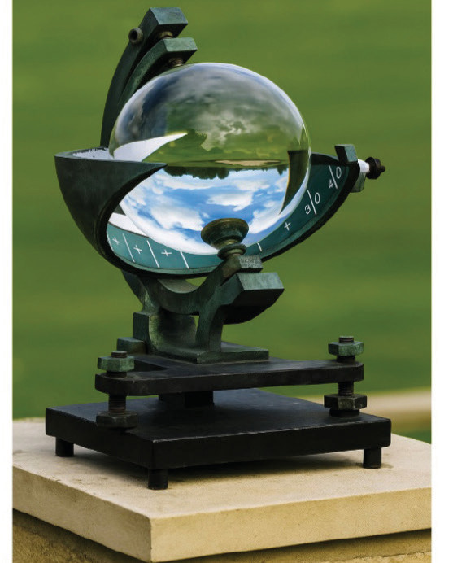

Sunlight
Sunlight is the natural light and energy that comes from the sun and reaching the Earth’s surface without obstruction in the atmosphere. Sunlight is one of the essential elements of weather that is crucial for the life and well-being of all living organisms. Solar rays are a source of heat, light, and energy that are vital for life on Earth. Additionally, sunlight helps plants grow through photosynthesis and aids in drying grains and clothes. Furthermore, morning sunlight is a source of vitamin D, which helps strengthen bones, especially for children.
Measuring Sunlight
Sunlight is measured in hours, week, month, year, or as a daily average. An instrument called a sunshine recorder is used to measure sunlight. This instrument measures the duration of which sunlight reaches the ground in a specific area. The sunshine recorder has a glass sphere held by metal and has card with hour and minute marks. This card can sense sunlight each day when the sun shines, it burns the card. At the end of the process, the card is taken out and read to see how many hours and minutes of sunlight there were in a specific day. Figure 8 shows a sunshine recorder.
